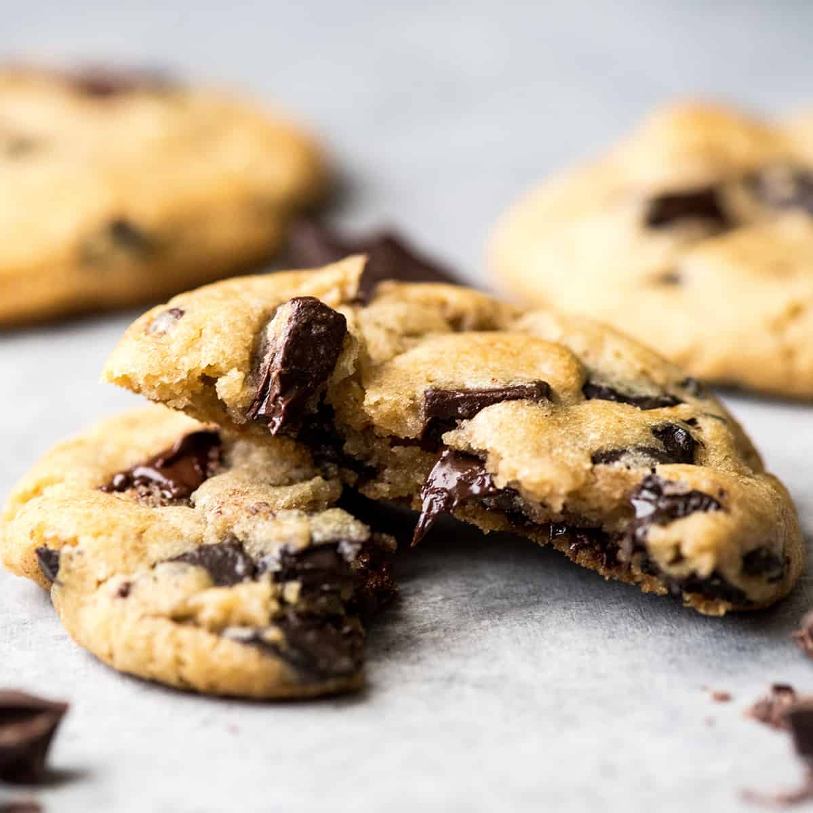

Chocolate Chip Cookies
Description

Everyone needs a classice chocolate chip cookies recipe in their repertoire! This is seriously the best chocolate chip cookie recipe EVER!
Ingredients
- 1 Cup Salted Butter Softened
- 1 Cup Granulated Sugar
- 1 Cup light Brown Sugar Packed
- 2 TSP Pure Vanilla Extract
- 2 Large Eggs
- 3 Cups All-Purpose Flour
- 1 TSP Baking Soda
- 1/2 TSP Baking Powder
- 1 TSP Sea Salt
- 2 Cups Chocolate Chips
Instructions
- Preheat oven to 375F/190C. Line three baking sheets with parchment paper and set aside.
- In a medium bowl mix flour, baking soda, baking powder and salt. Set aside.
- Cream together butter and sugar until combined.
- Beat in eggs and vanilla until light (about 1 minute).
- Mix in the dry ingredients until combined.
- Add chocolate chips and mix well.
- Roll 2-3 TBSP of dough at a time into balls and place them evenly spaced on your prepared cookie sheets.
- Bake in preheated oven for approximately 8-10 minutes. Take them out when they are barely starting to turn brown.
- Let them sit on the baking pan for 5 minutes before removing to cooling rack.
Home